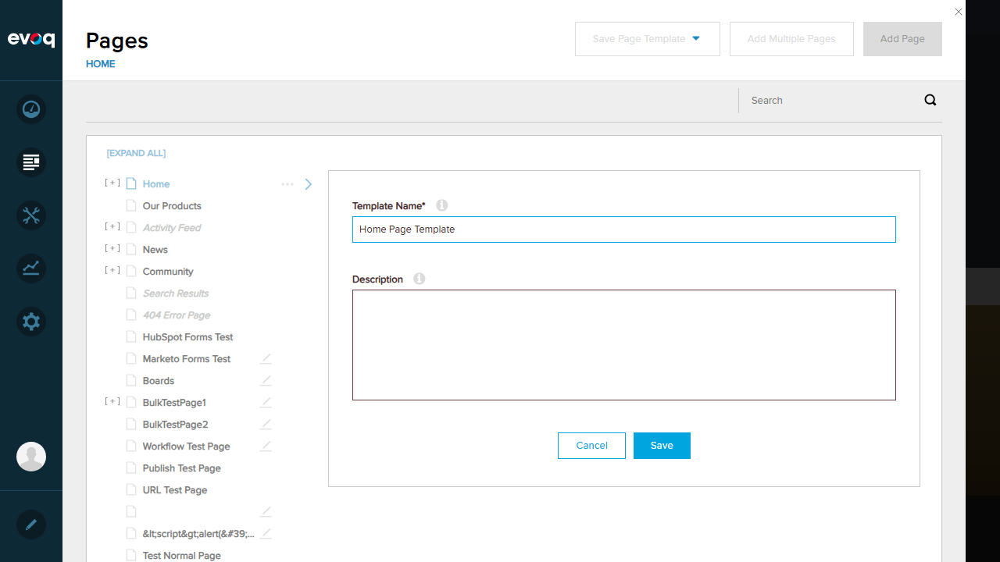
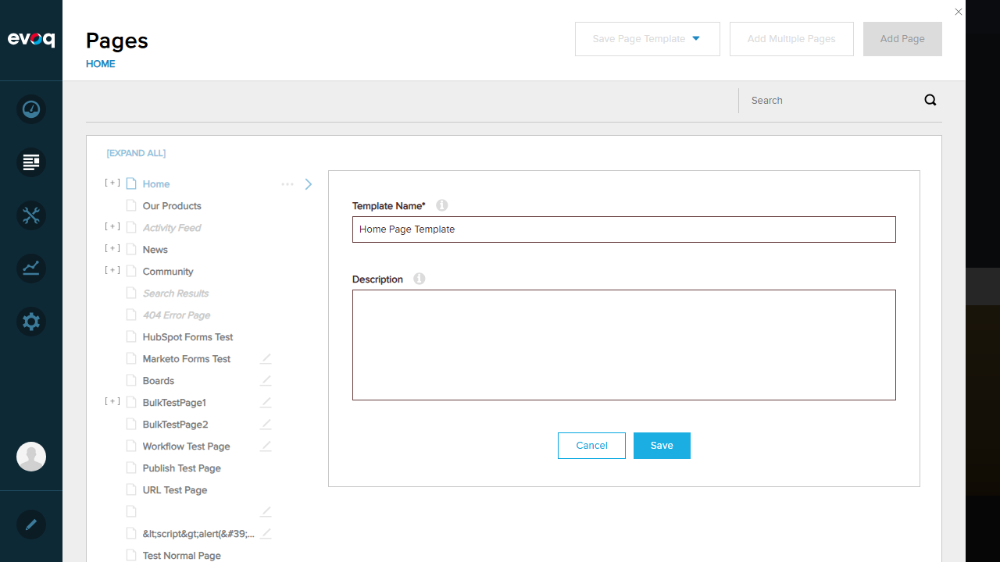

Template List Display - Test Report
Feature Information
| Property |
Value |
| Extension |
Evoq.PersonaBar.Templates |
| Feature Name |
Template List Display |
| Description |
Displays all page templates in a hierarchical list view with thumbnails, status indicators, and action buttons |
| UI Location |
Admin > Manage > Templates |
| Priority |
Top |
| Test Date |
2026-01-06 |
| Tester |
Automated (Claude) |
Test Results
Test 1: Navigate to Templates Section
PASS
What was tested: Navigation to Admin > Manage > Templates
- Logged in as SuperUser (host/Pass123456)
- Clicked on Manage menu in PersonaBar
- Clicked on Templates submenu item
Result: Successfully navigated to the Page Templates section. The UI displays the header "Page Templates" with a search box and "Add Template" button.

Test 2: View All Templates in List
FAIL
What was tested: Viewing the list of all templates
- Navigated to Manage > Templates
- Attempted to view the templates list
Issue Found: The GetPageTemplates API returns HTTP 500 Internal Server Error. An error message appears: "There was an error retrieving your content. Please check your internet connection."
Result: Unable to view templates list due to server-side API error.


Test 3: Verify Template Thumbnails Display
FAIL
What was tested: Verifying that template thumbnails display correctly
- Navigated to Manage > Templates
- Attempted to view templates with thumbnails
Issue Found: Cannot verify thumbnails because the templates list fails to load due to the API returning HTTP 500 error.
Result: Unable to test - templates list does not load.
Test 4: Check Template Status Indicators (Hidden/Disabled)
FAIL
What was tested: Verifying that status indicators (Hidden/Disabled) display correctly
- Navigated to Manage > Templates
- Attempted to view templates with status indicators
Issue Found: Cannot verify status indicators because the templates list fails to load due to the API returning HTTP 500 error.
Result: Unable to test - templates list does not load.
Test 5: Verify Template Publish Date Displays
FAIL
What was tested: Verifying that template publish dates display correctly
- Navigated to Manage > Templates
- Attempted to view templates with publish dates
Issue Found: Cannot verify publish dates because the templates list fails to load due to the API returning HTTP 500 error.
Result: Unable to test - templates list does not load.
Test 6: Verify Child Count for Templates with Children
FAIL
What was tested: Verifying that child count displays for templates with children
- Navigated to Manage > Templates
- Attempted to view templates with child counts
Issue Found: Cannot verify child counts because the templates list fails to load due to the API returning HTTP 500 error.
Result: Unable to test - templates list does not load.
Test 7: Test Empty State When No Templates Exist
FAIL
What was tested: Verifying the empty state display and ability to create templates
- Navigated to Manage > Templates
- Clicked "Add Template" button
- Observed the message: "You must save an existing page as a template prior to create a new template."
- Navigated to Content > Pages
- Clicked "Save Page Template" dropdown
- Selected "Evoq Page Template"
- Entered template name: "Home Page Template"
- Clicked Save button
Issue Found:
- The empty state message displays correctly when clicking "Add Template"
- However, attempting to save a page as a template via Pages section returns HTTP 400 Bad Request error
- The template creation process fails silently (no visible error message in UI, only in browser console)
Result: Empty state message displays correctly, but template creation fails with 400 error.




Observations
- Critical Server-Side Issues: The Templates module has severe backend problems:
GetPageTemplates API endpoint returns HTTP 500 Internal Server ErrorSavePageTemplate API endpoint returns HTTP 400 Bad Request
- UI Elements Present: Based on code review, the following UI elements exist but could not be fully tested:
- Template list with hierarchical view (
templatesHierarchy.js)
- Template thumbnails with hover preview
- Status indicators (Hidden/Disabled)
- Publish date display
- Child count display
- Edit and Delete action buttons
- Search functionality
- Empty State Handling: The "Add Template" button correctly shows a message when clicked, indicating users must first save an existing page as a template. This is the only fully functional UI behavior observed.
- Error Display: The error notification banner ("There was an error retrieving your content...") displays properly when API calls fail.
- Relevant Code Files Reviewed:
Services/TemplatesController.cs - API endpoints for template managementadmin/personaBar/Templates.html - UI template with Knockout.js bindings
Summary
Overall Assessment: The Template List Display feature is currently non-functional due to server-side API errors. The GetPageTemplates endpoint returns HTTP 500 errors, preventing the template list from loading. Additionally, the save template functionality returns HTTP 400 errors, preventing the creation of new templates.
Recommendation: Investigate and resolve the server-side issues in the Templates API before further UI testing can be conducted. The issues may be related to:
- Database connectivity or schema issues
- Missing configuration or permissions
- Dependencies on other services (e.g., Thumbnail Service)
Tests Passed: 1 of 7 (14%)
Tests Failed: 6 of 7 (86%)